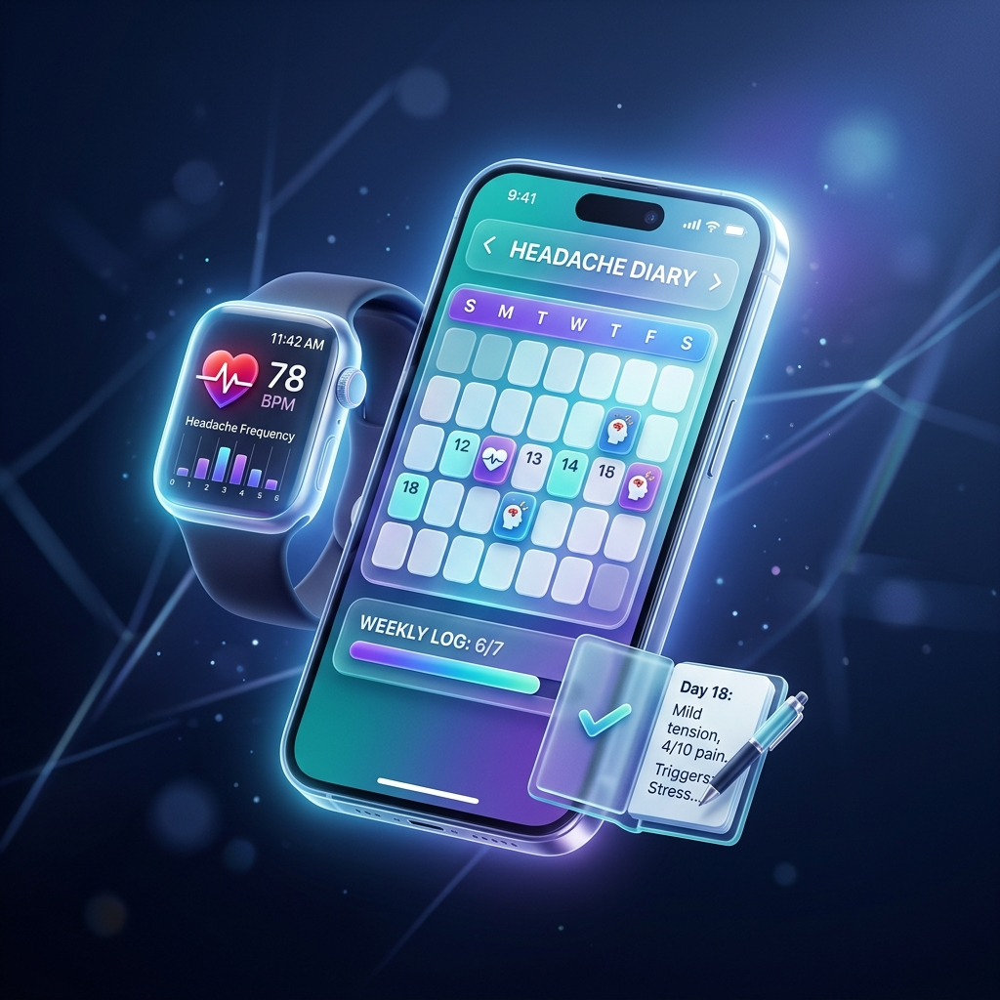

1. 偏頭痛並非「小毛病」：全球公共衛生的隱形危害 Not Just a Headache: A Major Global Health Challenge
在許多人的刻板印象中，「偏頭痛」常被誤解為只是普通的頭痛，或是因為壓力大、沒睡好而產生的短暫不適。然而在現代醫學中，偏頭痛是一種類型複雜且影響全身的慢性神經血管性疾病。發作時常伴隨著搏動性的劇烈抽痛，程度多為中度至重度，且會因日常身體活動而惡化。 Migraine is often misunderstood as "just a simple headache" or a transient discomfort due to stress. However, modern medical research defines migraine as a complex, disabling chronic neurovascular disease. Attacks feature severe, pulsating head pain that is moderate-to-severe and typically worsens with routine physical movement.
根據世界衛生組織（WHO）最新的全球疾病負擔研究，偏頭痛已被列為全球第二大導致失能（Years Lived with Disability, YLD）的原因；而在 50 歲以下黃金工作年齡人群中，它更是高居所有失能病因的第一位，對社會經濟造成難以估量的損失。在台灣，這項疾病的普遍性同樣令人吃驚： According to the World Health Organization (WHO), migraine is ranked as the second leading cause of disability worldwide. Among prime-age adults under 50, it stands as the absolute number one cause of years lived with disability, causing severe socio-economic impact. In Taiwan, the prevalence is equally alarming:
「根據中華民國衛生福利部（衛福部）與台灣頭痛學會的公開衛教資料顯示，台灣偏頭痛盛行率高達 9.7%，估計全台有將近 200 萬名患者深受其害。這意味著在我們身邊，每 10 個人中就大約有 1 人正面臨偏頭痛的折磨。好發族群多在 20 至 50 歲之間的社會中堅力量，且女性的發作率是男性的 3 倍。」 "According to statistics released by the Taiwan Ministry of Health and Welfare (MOHW) and the Taiwan Headache Society, the prevalence of migraine in Taiwan is approximately 9.7%, affecting nearly 2 million patients. This means roughly 1 in 10 individuals around us suffers from this disease. It heavily affects prime productive ages (20-50), with females being affected three times more than males."
資料來源：中華民國衛生福利部 / 台灣頭痛學會 官方發佈資料 Source: Taiwan MOHW / Taiwan Headache Society
對患者而言，這不僅是肉體上的折磨，更嚴重打擊了日常生活品質。發作時，除了要面對腦中如心跳般搏動的抽痛，通常還會伴隨著極度噁心、嘔吐、全身無力，以及對光線與聲音的高度敏感（畏光、畏聲）。這使得患者在發作時必須中斷手邊的工作、課業或社交活動，不得不躲入黑暗無光的寧靜房間內躺下，造成顯著的缺勤（Absenteeism）與帶病出勤效率折損（Presenteeism）。 For patients, it damages the overall quality of life. During attacks, in addition to throbbing head pain, patients experience severe nausea, vomiting, physical fatigue, and photophobia/phonophobia. They are forced to skip work, school, or social events, and retreat to a pitch-black, silent room. This causes a massive loss in workplace attendance (absenteeism) and productivity (presenteeism).
2. 預兆與無預兆：偏頭痛的臨床分類 Clinical Classifications & Presentations
在醫學診斷上，偏頭痛主要被劃分為兩大類型，其臨床表現各具特徵： For diagnostic purposes, migraines are clinically categorized into two major types:
① 無預兆偏頭痛 (Migraine without aura) ① Migraine without aura
這是最常見的偏頭痛類型，約佔所有病例的 70% 至 80%。發作時不會有前兆，而是直接爆發中至重度的搏動性痛楚。疼痛多分布於單側（但亦有約三分之一的患者為雙側疼痛），每次發作通常會持續 4 至 72 小時。此類頭痛在爬樓梯、走路或低頭時會劇烈加重，且極易伴隨噁心、畏光畏聲等全身症狀。 This is the most common type, accounting for 70% to 80% of cases. Attacks start without warning, leading directly to moderate-to-severe pulsating pain. It affects one side of the head (though about one-third of patients experience bilateral pain) and typically lasts 4 to 72 hours. Physical activities like walking or climbing stairs heavily worsen the pain, often accompanied by nausea and light/sound sensitivity.
② 預兆偏頭痛 (Migraine with aura) ② Migraine with aura
約有 20% 的患者在頭痛來襲前，會經歷短暫且可逆的神經系統功能障礙，即所謂的「預兆」。這些預兆多在頭痛前 5 至 20 分鐘內出現，且通常持續不超過 60 分鐘。 About 20% of patients experience transient, fully reversible neurological disturbances before head pain begins, known as an "aura." These typically appear 5 to 20 minutes before the pain and resolve within 60 minutes.
- 視覺預兆（最常見）：視野中出現閃爍的光點、鋸齒狀的亮線（閃光暗點）、盲點、甚至暫時性的視野缺損。 Visual Aura (Most Common): Flashing lights, blind spots, zigzag lines, or temporary vision loss.
- 感覺預兆：身體單側出現針刺感、發麻，痛感或麻木感可能從手指擴散至手臂，甚至波及臉部。 Sensory Aura: Numbness or a pins-and-needles sensation on one side of the body, often spreading from the hand up the arm to the face.
- 語言預兆：出現短暫的表達困難、口齒不清或想不起單字等失語症狀。 Speech Aura: Transient difficulties in expressing words, slurred speech, or minor aphasia.
3. 日常隱形殺手：多樣化的誘發因子 (Triggers) The Silent Triggers of Daily Life
偏頭痛的核心病理機制非常敏感，大腦的神經血管極易受到內部生理或外部環境變化的刺激而過度反應。根據台灣頭痛學會整理的臨床衛教，日常生活中最常見的誘發情境與機制包括： The brain of a migraineur is highly sensitive to inner physiological shifts and external environmental changes. According to clinical guides from the Taiwan Headache Society, common triggers include:
■ 精神壓力與情緒波動 ■ Psychological Stress and Emotions
情緒緊繃、高壓工作是公認的頭號誘發因子。然而同樣常見的是，當長期高壓驟然解除、身體進入放鬆狀態時（例如週末），副交感神經反彈會導致腦血管急速擴張，進而引發劇烈的頭痛。 Chronic stress and emotional fluctuations are primary triggers. Interestingly, a sudden relief from long-term stress (e.g., weekend relaxation) causes rebound blood vessel expansion, triggering severe headaches.
■ 睡眠規律的破壞 ■ Irregular Sleep Patterns
大腦渴望規律。睡眠不足、熬夜無疑會誘發頭痛；但同樣地，假日睡得太久、過度補眠，亦會打亂生理時鐘並引發俗稱的「假日頭痛 (Weekend Headache)」。 The brain demands consistency. Deprivation of sleep or pulling all-nighters triggers attacks; conversely, sleeping in too late on weekends disrupts the circadian rhythm and induces "weekend headaches."
■ 飲食習慣與特定化學成分 ■ Dietary Triggers
不規律的飲食（空腹導致低血糖）極易引發偏頭痛。此外，某些食物中含有的特定化學物質也可能觸發頭痛，例如：熟成起司中的酪胺（Tyramine）、巧克力、加工肉品（如培根、香腸）中的防腐劑亞硝酸鹽、紅酒中的組織胺與亞硫酸鹽、以及人工代糖阿斯巴甜等。此外，咖啡因的「過量」或「戒斷」也是常見的雙刃劍。 Skipping meals causes low blood sugar, which triggers pain. Specific compounds in food may also act as triggers: tyramine in aged cheese, phenylethylamine in chocolate, nitrites in processed meats, histamines in red wine, or artificial sweeteners. Caffeine excess or withdrawal is another double-edged sword.
■ 氣候與環境劇烈轉變 ■ Weather and Environmental Changes
台灣潮濕多變的氣候常讓患者感到困擾。季節交替、氣壓劇降、颱風前後，或是夏日頻繁進出冷氣房所造成的冷熱極端溫差，都容易引起腦部血管收縮與擴張異常。另外，刺眼的強光、密集的閃光、以及嘈雜的高分貝環境也是物理性的直接刺激。 Taiwan's humid, highly variable climate poses challenges. Seasonal transitions, barometric pressure drops, or walking between hot streets and air-conditioned rooms can trigger vascular instability. Bright sunlight, strobe lights, and noisy environments are direct physical triggers.
■ 女性荷爾蒙的劇烈波動 ■ Fluctuations of Female Hormones
這也是女性盛行率偏高的主因。在女性生理期前後，由於體內雌激素（Estrogen）水平急速下降，容易刺激腦部三叉神經血管系統，誘發週期性的偏頭痛發作（又稱經期偏頭痛）。 This explains the high prevalence in women. Fluctuations (particularly drops in estrogen) right before or during menstruation stimulate the trigeminovascular system, causing cyclical attacks.
4. 目前醫學的防線與局限：為什麼醫生一定要你記「頭痛日記」？ Medical Limitations & the Importance of a Diary
雖然現代醫學擁有了新型的特異性急性藥物（如翠普登類 Triptans）及預防性藥物（如 CGRP 抑制劑），但遺憾的是，偏頭痛目前在臨床上仍無法被完全根治。由於每位患者的誘因、痛感規律與用藥成效存在極大的個體差異，治療的成敗非常依賴「個人化的精準防禦與精準用藥」。 Despite modern therapeutic options (like Triptans and CGRP inhibitors), migraine cannot be fully cured. Because triggers, patterns, and responses vary heavily among individuals, successful treatment relies on personalized preventative strategies.
為此，不論是台灣頭痛學會還是各大醫學中心的神經內科醫師，在患者就診時，都會一再要求、叮嚀病患務必填寫「頭痛日記」。 Therefore, neurologists in Taiwan require patients to maintain a detailed, continuous "Headache Diary".
「頭痛日記是醫師調整處方的黃金指南。」
它能幫醫生客觀評估三個核心問題：第一，發作頻率是否已高到需要每日服用「預防性藥物」？第二，目前開立的止痛藥對你的藥效如何、止痛時間是否足夠？第三，也是最危險的，你服用的急性止痛藥是否過於頻繁？如果一個月服用止痛藥超過 10 天，極可能導致神經更加敏感，反而誘發更難纏的「藥物過度使用性頭痛」（Medication Overuse Headache, MOH）。 "The headache diary is the golden guide for physicians to adjust treatments."
It helps doctors answer three critical questions: 1. Is your attack frequency high enough to warrant daily preventive medications? 2. Is your acute pain reliever working efficiently? 3. Are you taking painkillers too frequently? Overusing acute medications (more than 10 days per month) can paradoxically trigger "Medication Overuse Headaches" (MOH).
換句話說，沒有一份詳實客觀的紀錄，醫師看診時只能憑藉病患糢糊的近期記憶來猜測病情，診斷與用藥的精準度將大打折扣。 In other words, without a continuous objective record, doctors can only guess the severity based on the patient's vague recollections, which reduces the precision of medical adjustments.
🔍 何謂「頭痛日記」？ 🔍 What is a "Headache Diary"?
頭痛日記是一種由患者主動記錄的健康日誌，用於追蹤每一次頭痛發作的關鍵特徵。一份標準的日記通常包含：發作起訖時間、疼痛強度（自評 1 至 10 分）、伴隨症狀（如畏光、畏聲、噁心）、用藥反應（藥物名稱、劑量與服用時間）、生理期週期，以及可能的日常誘發因子。這能協助醫生找出您的專屬偏頭痛規律，做出最精準的預防與治療。 A headache diary is a self-reported log used to track key details of each attack. A standard diary typically records: onset and offset times, severity (on a 1-10 scale), associated symptoms (like photophobia, phonophobia, nausea), medications taken (name, dosage, timing, efficacy), menstrual cycles, and potential triggers. This helps doctors decode your migraine patterns for precise prevention and treatment.

🔄 極簡二階段頭痛紀錄流程 🔄 Minimalist Logging Workflow
1
痛當下：一秒快速記錄
Onset: 1-Second Quick Log
發作當下視線模糊，手機或手錶一鍵標記開始時間，隨即休息。
When it strikes, tap one button on watch or phone to log time, then rest.
➔
2
緩解後：從容補登細節
Recovery: Supplement Later
精神完全恢復後，隨手補填藥物、症狀與可能的日常誘因。
Add medications, symptoms, and potential triggers at your convenience.
➔
3
就診時：生成 PDF 報告
Clinic: PDF Report
一鍵生成無亂碼的精美 PDF 看診報告，協助醫師精準診斷。
Generate clean PDF reports to share with your doctor for better care.
📝 頭痛日記記錄範例 (Example) 📝 Example of a Diary Log Entry
| 記錄欄位Field | 日記內容範例Sample Log Entry |
|---|---|
| 發作時間Time | 2026/07/12 14:30 ~ 19:00 (持續約 4.5 小時)2026/07/12 14:30 ~ 19:00 (Duration: ~4.5 hours) |
| 疼痛強度Severity | 7 / 10 分 (中重度，太陽穴搏動性跳痛)7 / 10 (Moderate to severe pulsing pain on temples) |
| 伴隨症狀Symptoms | 畏光、怕吵、輕微噁心感Photophobia, phonophobia, mild nausea |
| 急性用藥Medication | 15:00 服用翠普登 (Triptan) 1 顆，17:30 痛感降至 2 分Took 1 Triptan tablet at 15:00, pain reduced to 2/10 by 17:30 |
| 誘發因子Possible Triggers | 前一晚熬夜睡眠不足，且夏日進出冷氣房溫差大Sleep deprivation the night before, extreme hot-to-cold air conditioning shifts |
| 日常影響Daily Impact | 無法專注工作，需在黑暗安靜的房間內躺下休息Could not focus on work, had to lie down in a dark and quiet room |
🔗 權威醫學資源連結 🔗 Authoritative Resources
如果您希望下載並列印標準的紙本頭痛日記，可前往 台灣頭痛學會官方網站 下載最新版本的「頭痛日記」PDF 表格，帶去門診與您的主治醫師討論，這對個人化的偏頭痛管理至關重要。 If you prefer a physical paper record, you can visit the official Taiwan Headache Society Website to download standard Headache Diary PDFs. Sharing them with your physician is key to personalized migraine care.
5. 一位偏頭痛困擾者的真實痛點：極度不適時，紀錄是一場折磨 A Sufferer's Pain Point: Strained Logging Under Severe Pain
當世界都在旋轉搏動，誰有能力填表單？
When the World is Throbbing, Who Can Fill Out Forms?
作為一個有著多年病史的偏頭痛困擾者，我深知每一次發作來襲時的絕望。當太陽穴伴隨著心跳劇烈抽痛，眼前出現重影與畏光，胃裡一陣陣噁心想吐，甚至連一絲聲音都像在耳邊打雷時，我唯一能做的，就是關掉所有燈光，躲進最暗、最安靜的被窩裡瑟瑟發抖。 Having battled migraines for years, I know the raw desperation. When my temple throbs in sync with my heartbeat, light blinds my eyes, nausea turns my stomach, and tiny sounds feel like thunder, all I can do is turn off every light and curl up in a dark, quiet bed.
然而，在這種大腦幾乎當機、連睜眼都極度痛苦的時刻，醫生的叮嚀卻像一副沉重的枷鎖：「發作時要仔細記錄：幾點開始痛？痛感是幾分？伴隨什麼症狀？吃了什麼止痛藥？劑量是多少？幾點開始緩解？」 Yet, during these moments when my brain freezes, the doctor's instructions feel like a heavy burden: "Log everything carefully: What time did it start? How bad is the pain scale? What symptoms occurred? What medication and dosage did you take? When did it resolve?"
這在實務上根本難以做到。 叫一個劇痛中的人拿筆去紙本表格上寫字？紙張常常不見，看診時帶去也是一堆凌亂的塗改。叫人去盯著刺眼的手機螢幕，在市面上功能繁瑣的 App 裡點開層層下拉選單、填寫複雜的多步驟欄位？我多看一眼螢幕亮光都覺得噁心想吐。這就是為什麼偏頭痛日記在臨床上依從性極低的原因。 This is practically impossible. Asking a groaning patient to write on a paper sheet? Paper gets lost, and brings messy scribbles to clinic visits. Asking them to stare at a glowing screen and navigate nested dropdowns or multi-step wizards in over-designed apps? Even a single second of screen light causes severe nausea. This is why diary compliance remains extremely low.
因為自己感同身受，我發現我們在痛楚當下的真實需求其實非常單純： Through my own suffering, I realized that our true need during an attack is incredibly simple:
「我只想要在發作發生的當下，閉著眼睛，用手錶或手機一鍵盲按，花不到一秒鐘先標記：『我現在開始頭痛了』。接著我就可以立刻去休息。等幾個小時或隔天，頭痛完全緩解、體力恢復了，我才在空閒時間補登用藥、症狀、誘因與備註。」 "When it strikes, I just want to close my eyes, tap a single button on my watch or phone blindly, taking less than a second to tag: 'I started a headache now'. Then I can immediately go rest. Hours later or the next day, when the pain is gone and my energy is back, I can supplement meds, symptoms, triggers, and notes at my convenience."
由於遍尋不著能完美適配此一痛點的工具，我決定以一個困擾者的身份，為同病相憐的大家開發這款 App —— 《我的頭痛日記》(MigraLog)。 Since no available app was designed to accommodate this specific friction, I decided to build one myself for all of us — My Headache Diary (MigraLog).
6. 以「極致簡約與隱私安全」為本，分享大眾 Built on Simplicity & Absolute Privacy
這款日記 App 圍繞著「最少點擊，最大臨床價值」與「保守穩定」的哲學打造： This diary app is built around the philosophy of "minimal clicks, maximum clinical value, and absolute stability":
- 一鍵極速記錄：開啟 App 迎面就是巨大的快捷按鈕，即使在劇痛視線模糊時，盲觸也能完成記錄。 One-Tap Quick Entry: A giant shortcut button greets you upon launch, allowing instant logs even with blurred vision.
- 隨手拈來的 Wear OS 支援：支持獨立手錶 App 與 Tiles 資訊方塊。連手機都不用拿，在錶面上隨手按一下即可完成發作標記，防誤觸且無負擔。 Wear OS Standalone & Tile: No need to find your phone. Tap a standalone Tile on your wrist to log instantly, designed to prevent misclicks.
- 無壓力的後續補齊機制：發作時間、生活影響程度、伴隨症狀（畏光/畏聲/噁心）、誘發因素與個人備註，全部留待您精神恢復時隨時補登，非強迫性。 Stress-Free Post-logging: Duration, disability level, triggers, medications, and text notes can all be supplemented later when your mind is clear.
- 完全本機優先與隱私保障：醫療數據屬於高度敏感隱私。本 App 無任何第三方伺服器、無廣告、無隱私追蹤 SDK。我們只串接您個人的 Google Drive 隱密資料夾（AppData）進行直接同步，無任何中轉，完全掌控隱私。 Local-First & Direct Cloud Sync: Health data is highly sensitive. We host no third-party servers, no ads, and zero tracking SDKs. Sync is completely serverless, sending encrypted backups directly to your personal Google Drive.
- 簡約專業的 PDF 看診報告：一鍵生成乾淨、無中文字型亂碼的 PDF 日誌報告（包含用藥頻率比例圖、痛感標籤、動態起訖時間）。就診時直接向醫師展示，協助醫師在數十秒內做出最精確的處方評估。 Clean PDF Clinic Reports: Export formatted tables, visual medication bar charts, and color-coded pain scale labels in a beautiful PDF report. Share it directly with your doctor to make medical consultation highly efficient.
雖然偏頭痛是一場漫長的抗戰，但藉由仔細記錄頭痛日記，我們能夠主動找出自己誘發偏頭痛的個人規律。只要能避開這些觸發因子，就能更有效地掌握自己的健康主導權，從而大幅提升生活與工作品質。 Although managing migraine is a long journey, keeping a meticulous diary empowers us to identify our personal trigger patterns. By actively avoiding these triggers, we can regain control over our health and significantly improve our quality of life.
《我的頭痛日記》純粹是我為了解決自身痛苦而開發的工具。如今我將它免費分享出來，沒有花哨的商業宣傳，也沒有隱私的後門。衷心希望這款 App 能成為您對抗偏頭痛路上的安靜助手，幫助我們在就診時與醫師展開更精確、更具價值的溝通。 My Headache Diary was built out of my own necessity. I share it freely without any commercial motives or privacy backdoor. I sincerely hope it serves as a quiet helper in your journey managing migraines, facilitating precise and valuable consultations with your doctor.